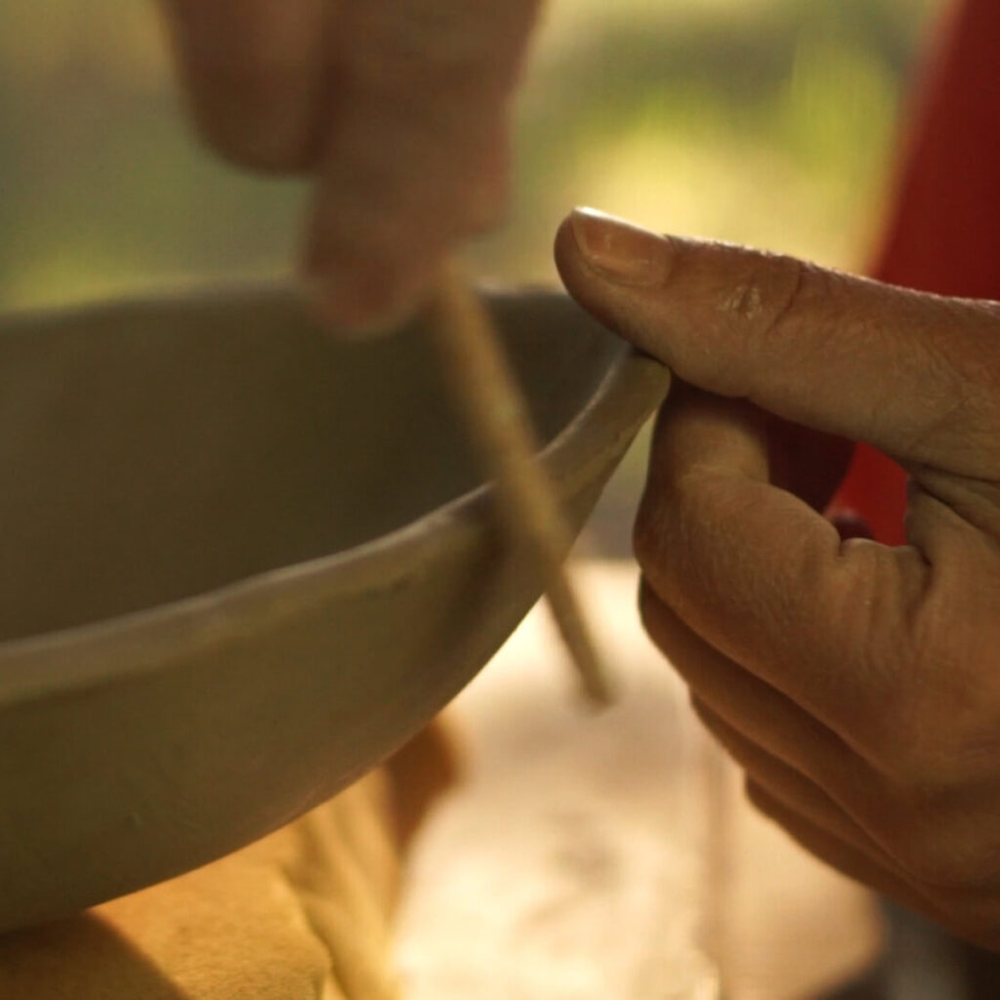
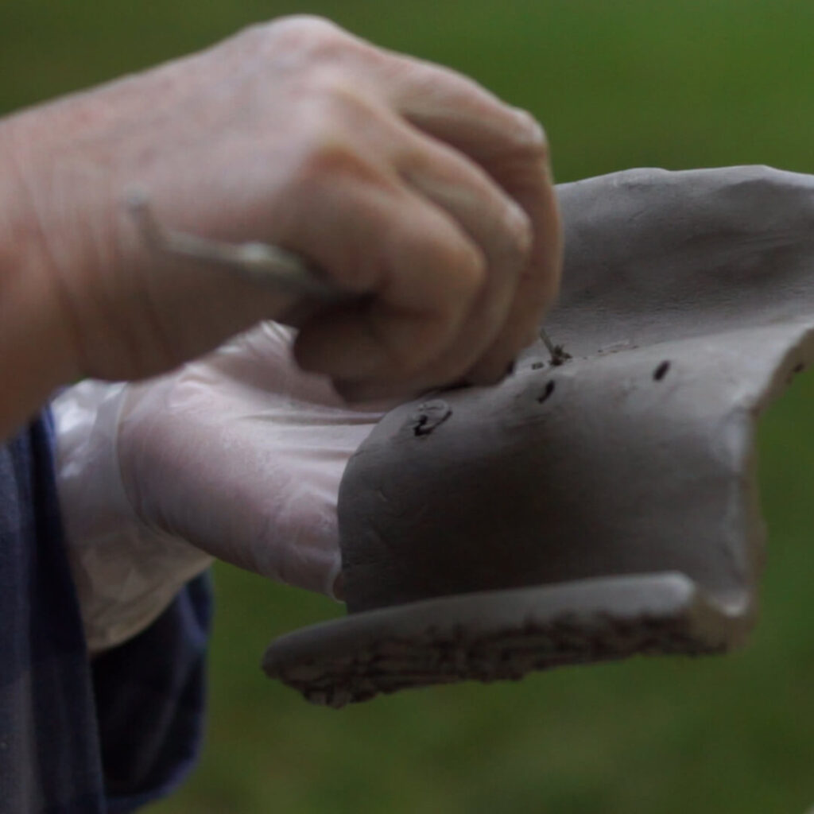
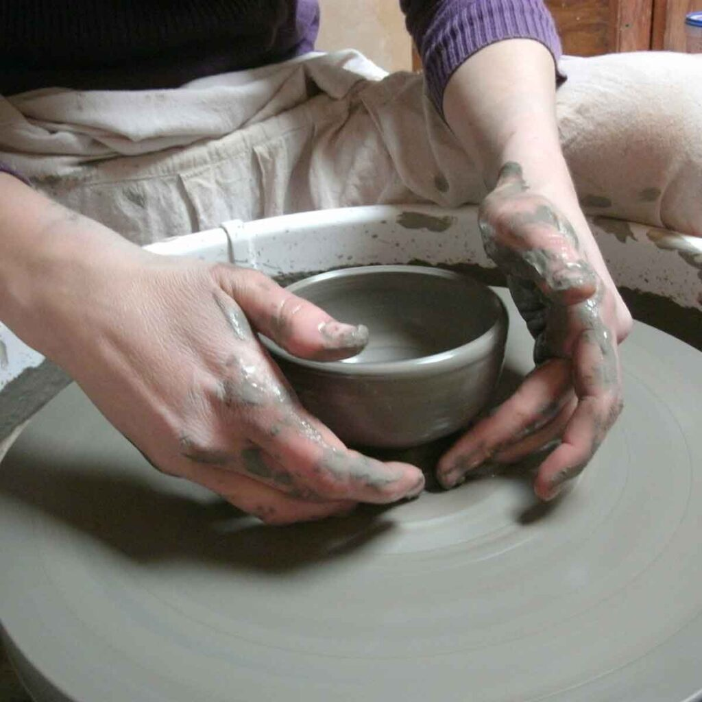

Zalety uprawiania ceramiki i garncarstwa

Kiedy lepimy z gliny, nasz umysł i ciało są w naturalnej harmonii, skoncentrowane na twórczym działaniu. Taka artystyczna aktywność otwiera umysł i uwalnia nas od codziennych zmartwień. Oto 10 największych korzyści z zajmowania się ceramiką i garncarstwem.
- Twórcze wyrażanie siebie – wyrażanie siebie poprzez tworzenie daje fizyczne i psychiczne korzyści. Sztuka oferuje możliwość ekspresji i wyrażenia emocji.
- Optymizm – garncarstwo uwalnia spontaniczność, autoekspresję, wzmacnia pewność siebie i poczucie własnej wartości.
- Koncentracja – ceramika pozwala uciec od codziennych trosk i skupić się na swojej twórczości. Skupienie pomaga umysłowi się zrelaksować. Jest to swego rodzaju medytacja.
- Eksploracja i eksperymentowanie – doskonały sposób dla ludzi w każdym wieku na odkrywanie swoich możliwości. W ceramice nie ma dobrej ani złej metody tworzenia.
- Redukcja stresu – podczas tworzenia form ceramicznych wymagane jest skupienie, co ogranicza rozproszenie zewnętrznymi bodźcami.
- Ćwiczenie rąk, nadgarstków i ramion – ruchy są delikatne, ale wzmacniają ręce i poprawiają zręczność.
- Relacje międzyludzkie – podczas wspólnych zajęć ceramicznych można nawiązywać kontakty z innymi uczestnikami. Luźna atmosfera pomaga zrelaksować się i rozpocząć rozmowę.
- Naturalny środek przeciwbólowy – ponieważ garncarstwo redukuje stres i wzmacnia poczucie własnej wartości, ból spowodowany stresem może się zmniejszać.
- Utrwalanie wspomnień – wyroby garncarskie często przetrwały tysiące lat. Twoje dzieło ma szansę przetrwać wieki.
- Poprawa jakości życia – sztuka jest sposobem wyrażenia siebie, rozwija ciało i umysł. Nowe projekty i techniki utrzymują produktywne hobby.

